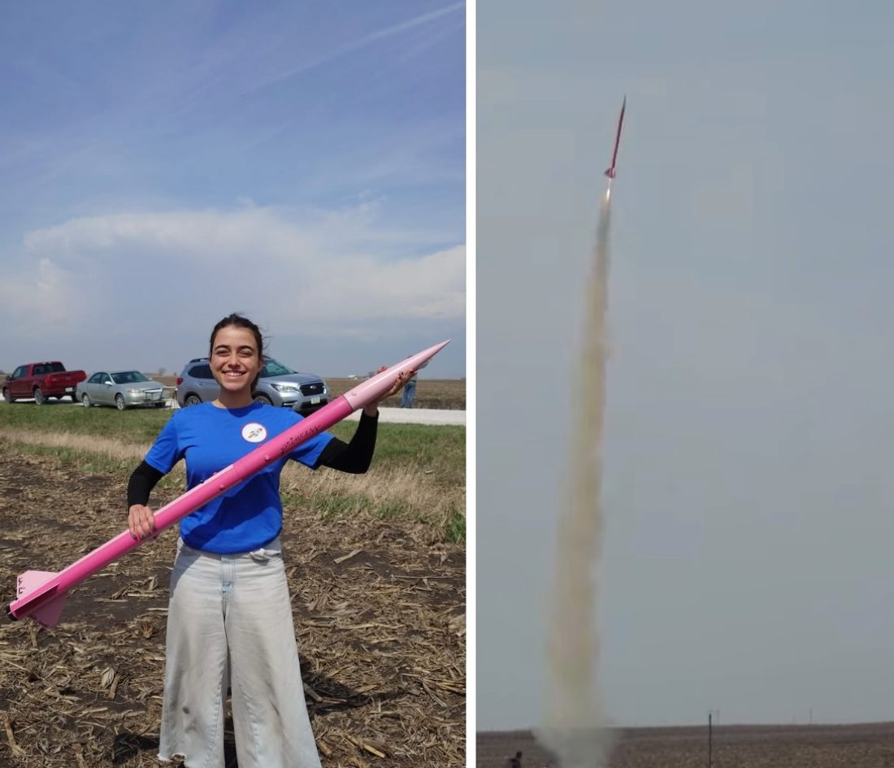
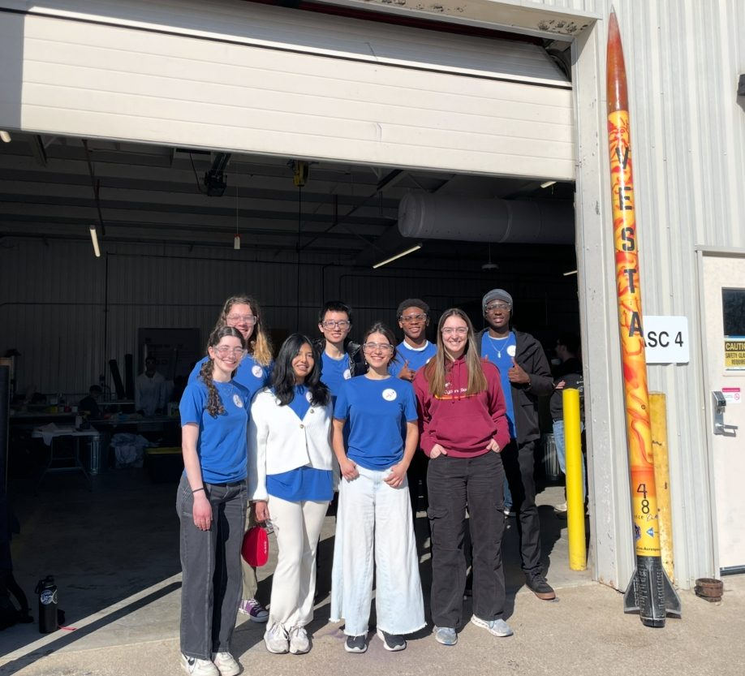
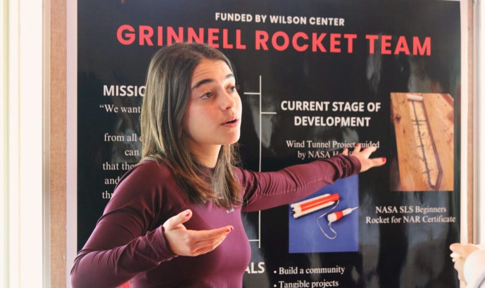
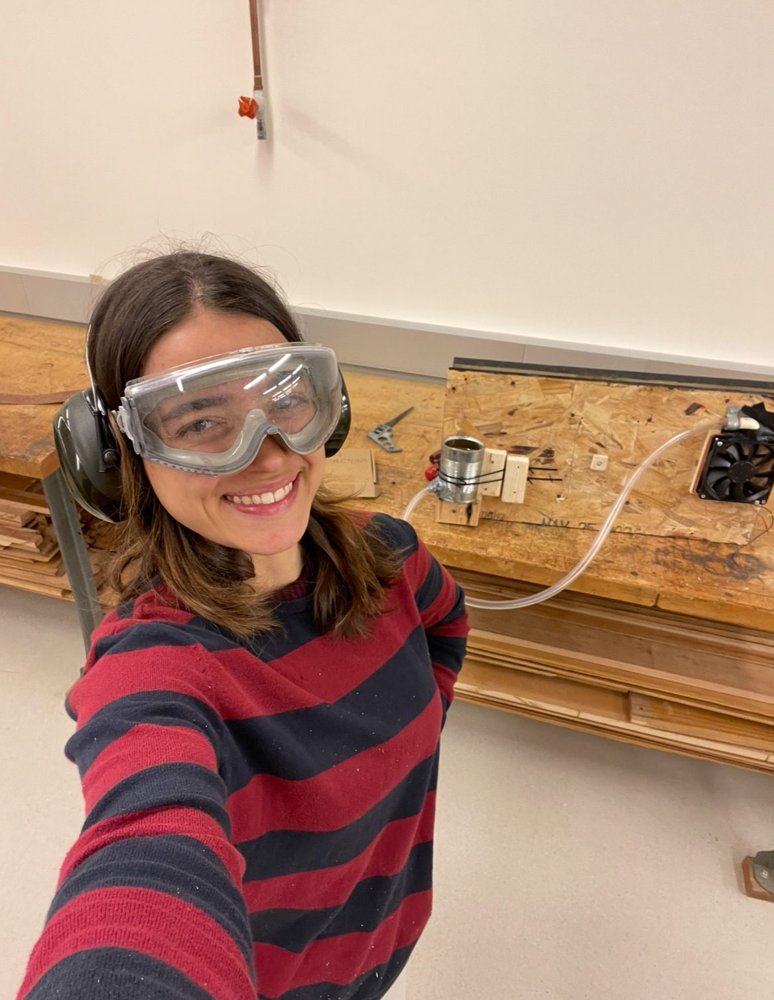

Rockets
I'm the Founder & President of the Grinnell Rocket Team. We design, build, and launch high-power rockets - from the pink Princess that earned us Tripoli Level 1 to our current IREC 2026 entry aiming for 10,000 feet.
Princess · Our first certified flight

Pink, proud and legally certified.
Princess was our first fully team-designed high-power rocket - every thrust calculation, drag coefficient, fin flutter check and recovery timing done by us beforehand. Nominal flight. Successful recovery. Earned Tripoli Level 1 certification on the first attempt, a nationally recognized credential that unlocks higher-class motors for future builds.
Flying Squirrel · IREC 2026
Targeting 10,000 feet.
Competing in the 2026 Intercollegiate Rocket Engineering Competition - one of the largest collegiate rocketry competitions in the world. We designed the flight simulations, the structural calculations, the avionics wiring and the recovery system ourselves. Every design decision has to be documented and defended.
We're also flying a science payload that tests which vibration-isolation materials best protect sensitive electronics during flight - accelerometers, real data and real conclusions that inform future avionics design.
Team & presence


Wind tunnel · Our first build

NASA Glenn-inspired wind tunnel
The Grinnell Rocket Team's first capital project, built with faculty advisor Prof. Tjossem and inspired by the NASA Glenn Research Center design. It's scientific equipment we designed from scratch and validated ourselves - not just using a black-box tool. It's also how we gained the confidence to take on everything bigger that came after.
Publications & outreach
Published articles on rocket propulsion and related physics topics at Jovens Cientistas Brasil, including a deep technical piece on hybrid rockets and solid fuel. See the Research page for the full list. Also run K-12 outreach workshops at Grinnell High School and Middle School, teaching younger students how rockets actually work.